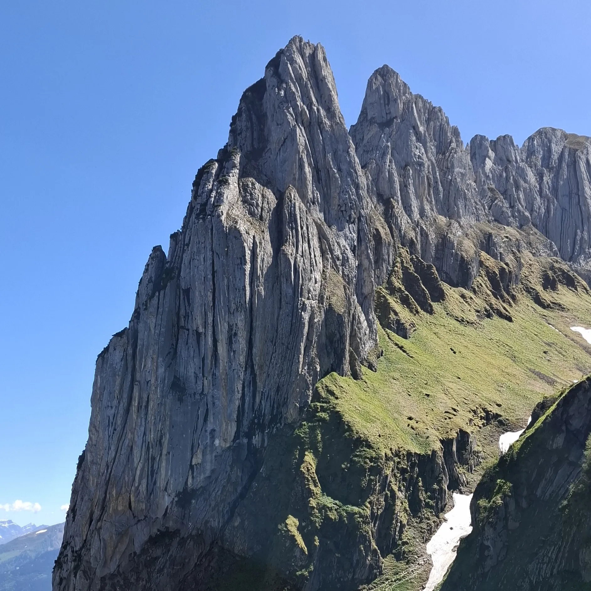
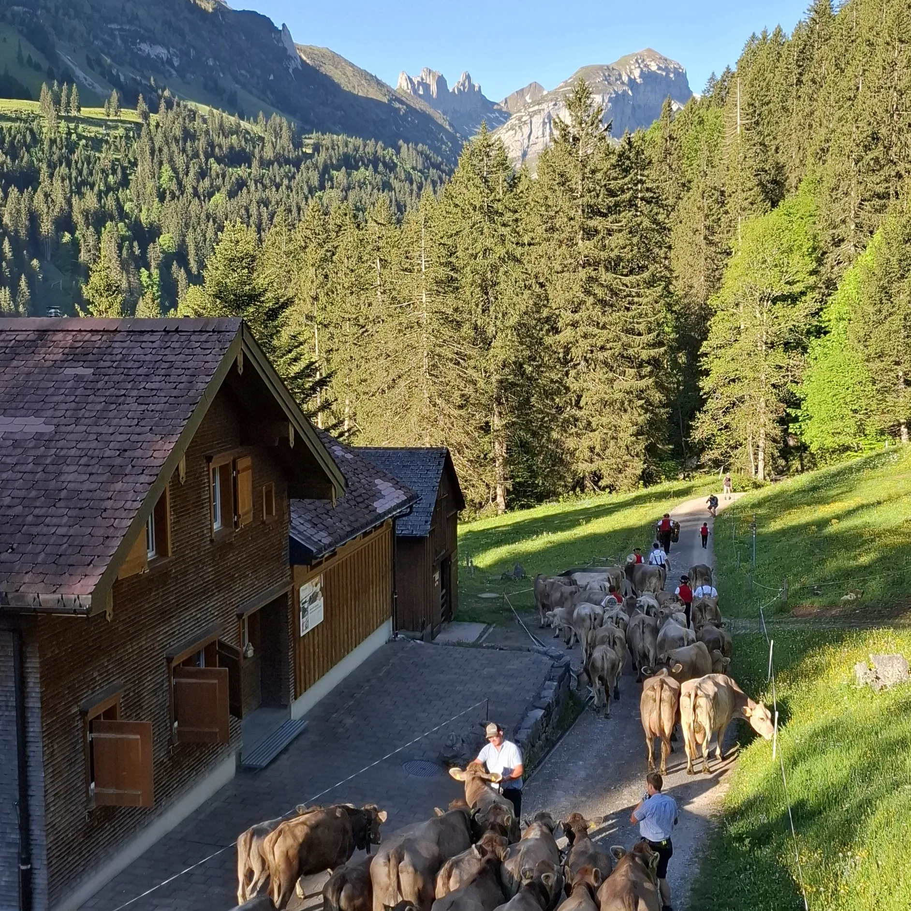
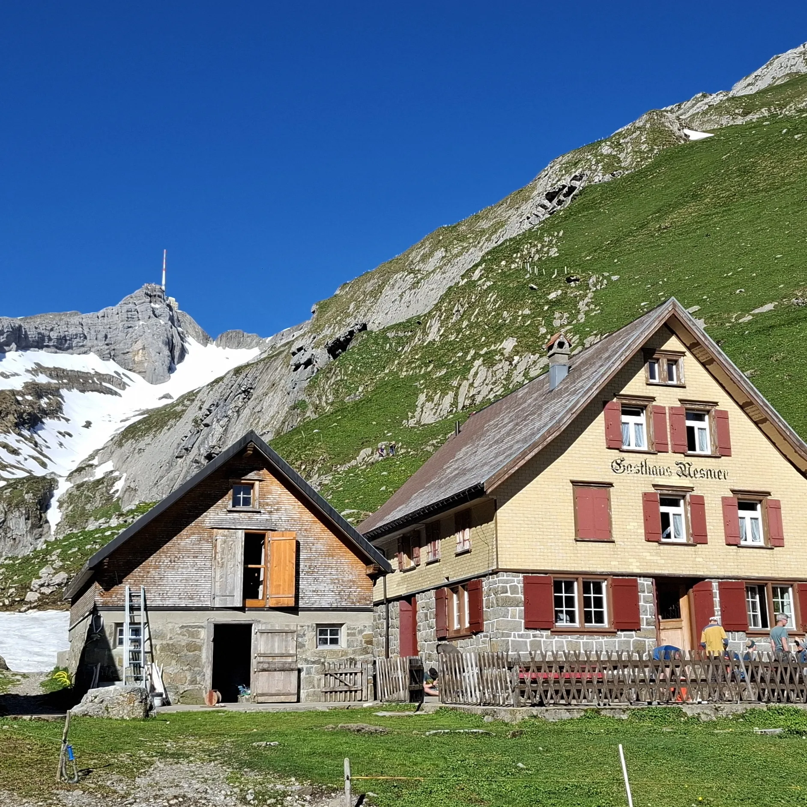

Une grande chute d’eau et des montagnes verdoyantes 🏞️, c’est l’accueil qu’on a eu à Fionnay pour commencer notre trek. Nous avons découvert le chemin qui dévoile le panorama sur le massif du Combin. 🏔️ Suite à quelques passages de nuages 🌬️, le Lac de Louvie s’est déployé devant nous. La cabane de Louvie surplombe ce lac, une belle construction en bois ornée par une tête de bouquetin à l’entrée. Nous y avons passé la première nuit. ✨
Le deuxième jour a commencé avec l'observation de la faune sauvage. 🐐 Des troupeaux de bouquetins surplombant la vallée dans laquelle nous nous sommes aventurés pour monter au Col de Louvie. Nous avons chevauché de gros rochers, trouver des edelweiss 💮 et la neige à 2800m d’altitude. C’est dans un cadre lunaire 🌕 que nous avons fait la pause du midi. Après de courtes averses, nous avons découvert le paysage grâce à une belle éclaircie. Une fois le Col de Prafleuri passé, nous avions plus qu'à descendre à la cabane pour s’y détendre.
Troisième et dernier jour, réveil matinal 🌄 avec les étagnes non loin de nous. Nous avons trouvé les troupeaux de mâles durant la descente. Au fil de la marche, nous avons observé le barrage de la grande Dixence, le Glacier de Cheilon et le Weisshorn. Nous avons profité de la cabane d’Essertse 🍹 pour y faire une pause. Le trek s’est terminé à les Collons avec une belle planchette méritée et la vue sur la Dent Blanche et le Cervin. 🎒
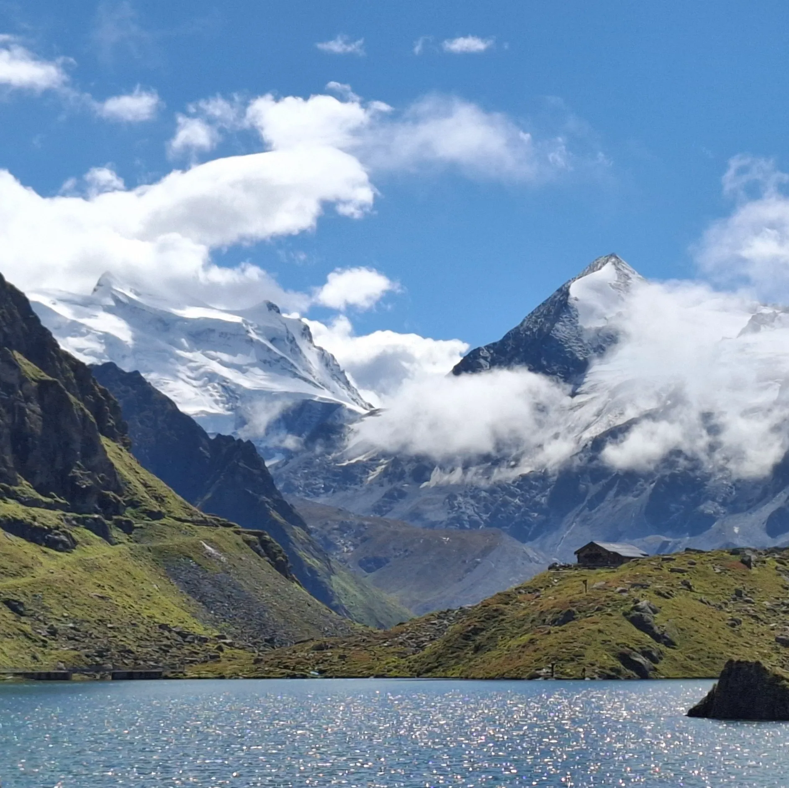
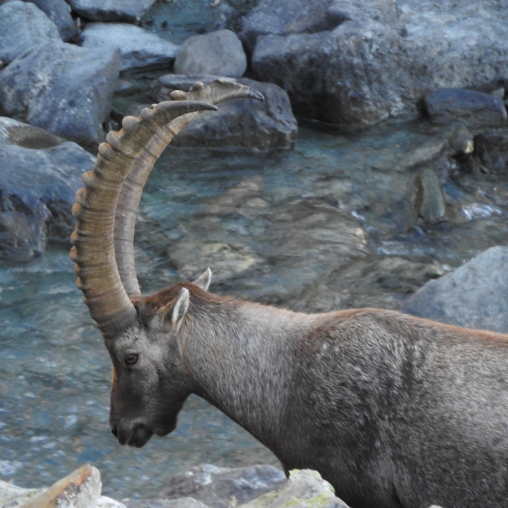
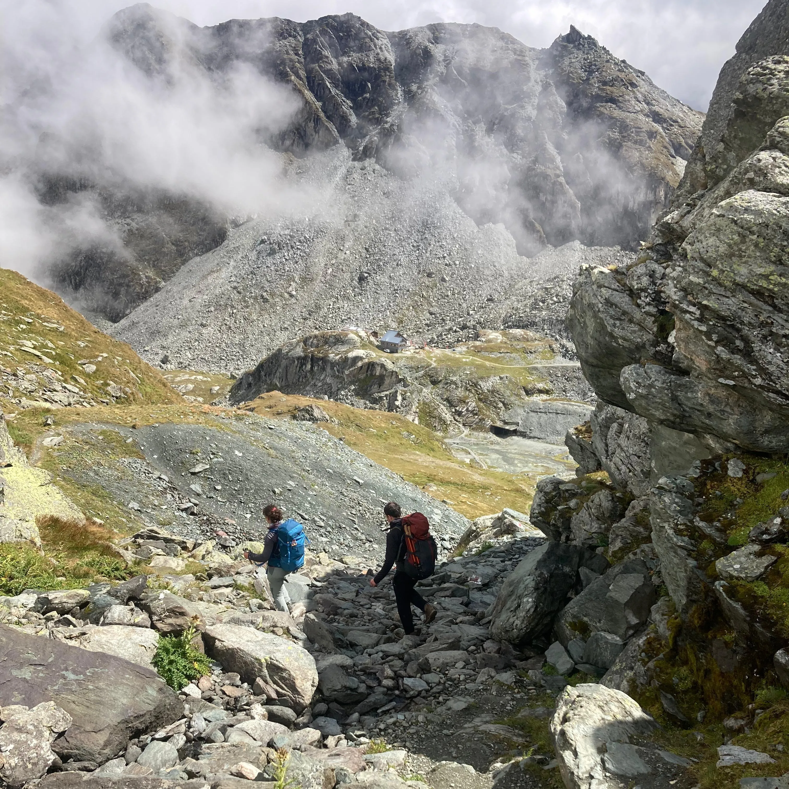
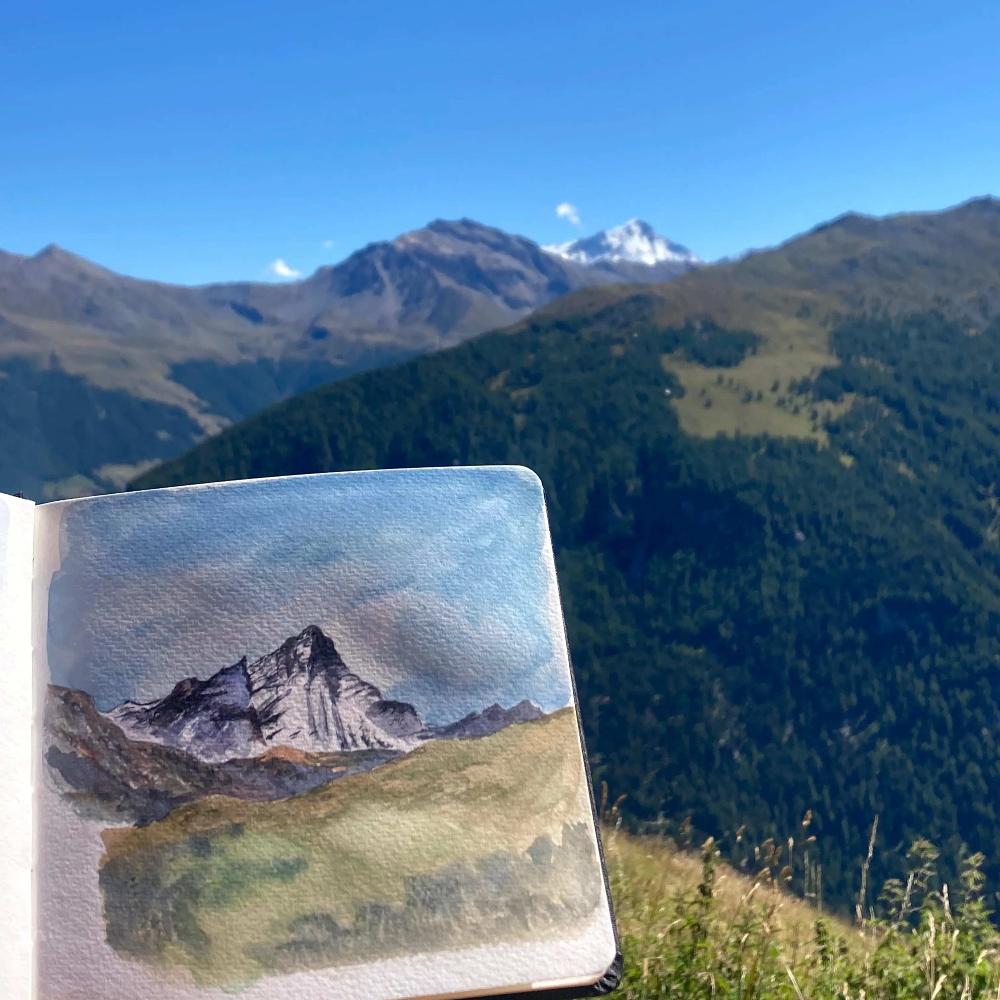
Un week-end de printemps digne de l’été!
C’est à l’opposé de la romandie que j’ai emmené un groupe découvrir les Préalpes. Au départ de Wasserauen, nous sommes montés au Seealpsee et avons découvert le fabuleux panorama qui décor les bière Quöllfrisch 🍺 C’est dans ce décor que nous avons atteint la cabane Mesmer, à 1600m d’altitude. 🏠
Le deuxième jour a commencé avec la vue dégagée sur le Säntis. Nous avons découvert les panoramas avec l'ascension jusqu’au col Widderalpsattel, le Fählensee qui nous a permis de nous rafraîchir, et le Saxerlücke qui offre une vue plongeante sur la chaîne de Chrüzberg. ⛰️ Une autre icône du canton d’Appenzell. Pour conclure la journée, nous sommes arrivés à l’auberge Plattenbödeli.
Pour finir le troisième jour du trek, l'ambiance était donnée par le son des cloches des vaches qui montaient à l’alpage. 🐮 Nous avons découvert Alpsigel, un petit hameau où les gardiens d’alpage font paître leurs vaches. Un paysage typiquement suisse pour finir en beauté la descente jusque Wasserauen.



Début de l’été 🌄, les beaux jours arrivent et avec l’envie d’aventure ! 🥾 C’était l’occasion d’organiser un trek entre amis pour passer du bon temps en montagne. Pour cette occasion, nous sommes allés découvrir l’Oberland Bernois. Depuis Grindelwald, nous avons pris de la hauteur pour découvrir le somptueux panorama sur les 3 bernoises. 🏔️ Les 4 jours d’aventures étaient agrémentés de paysages variés allant de lacs de montagnes, aux pâturages jusqu’à un magnifique paysage glaciaire. Nous avons passé les nuits dans différents refuges de montagnes dont la superbe cabane de Bäregg 🏠 pour terminer en beauté.
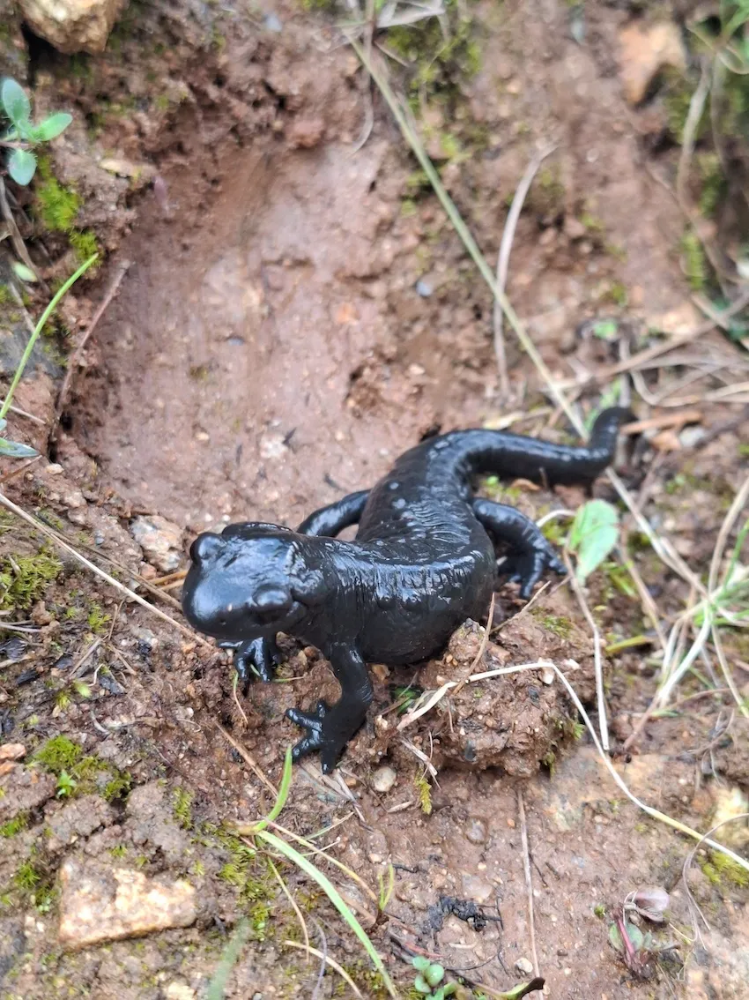
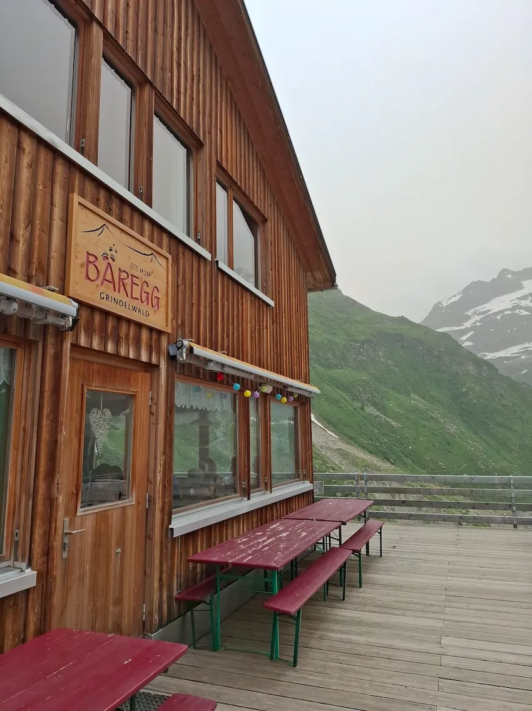
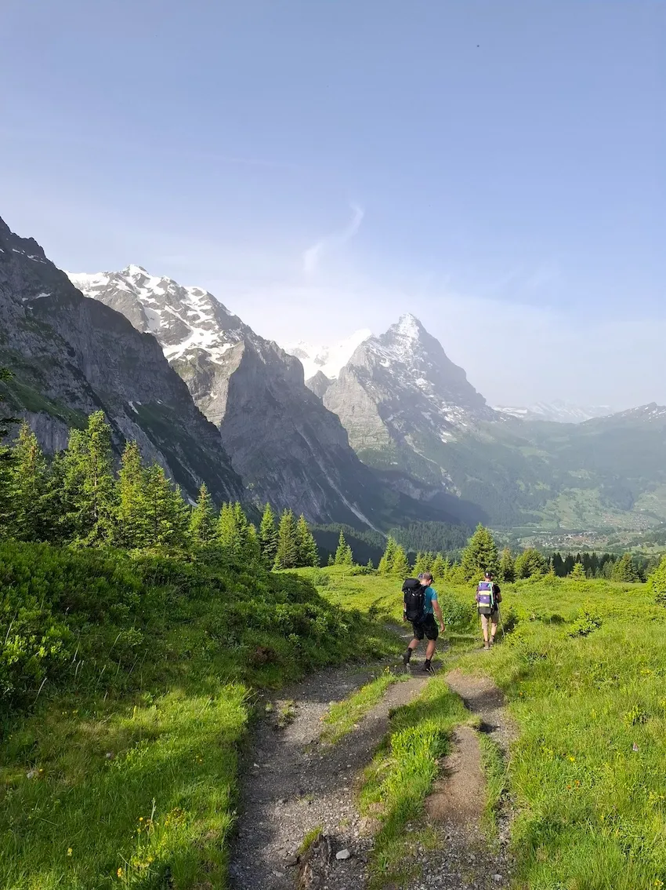
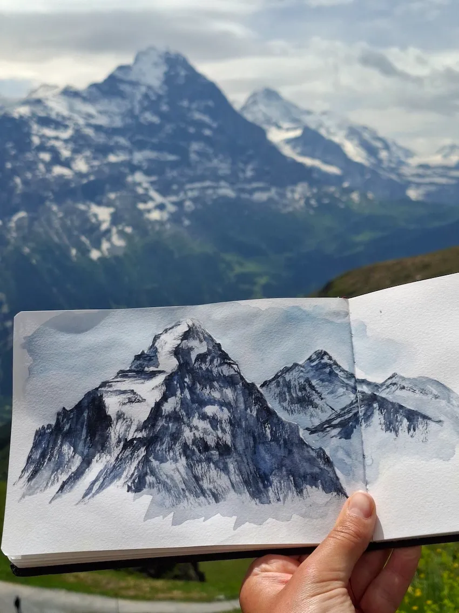